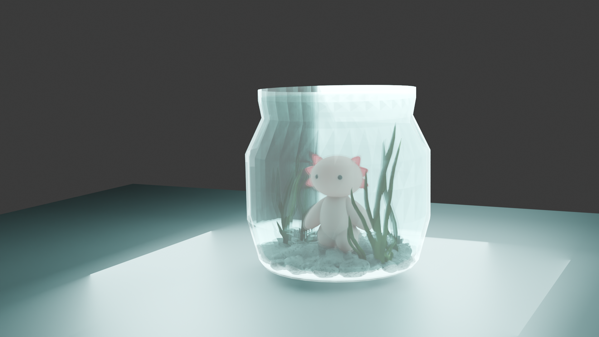
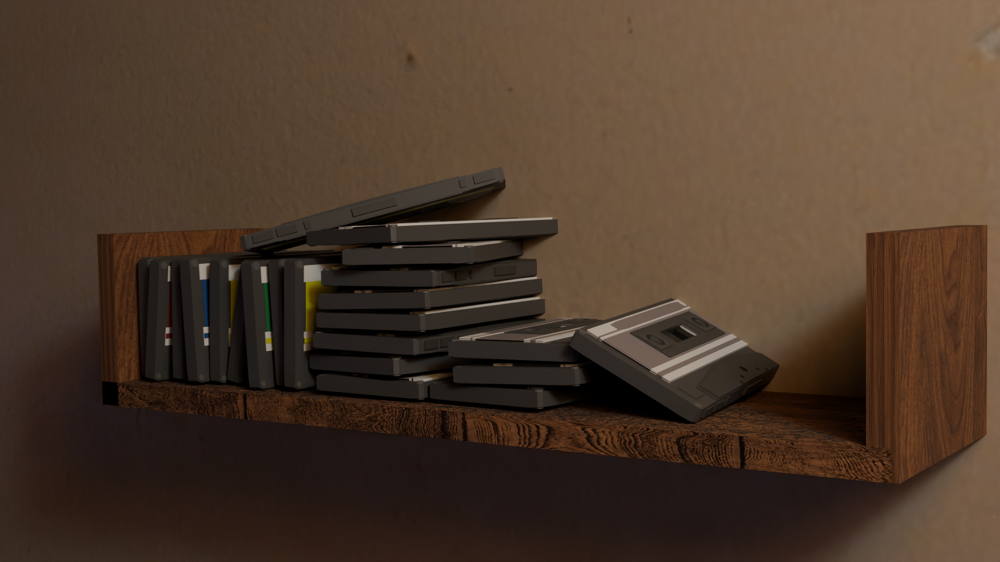
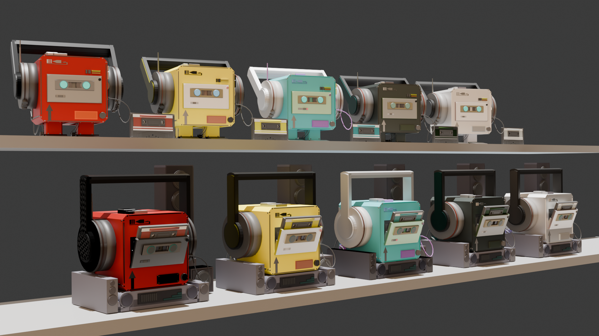
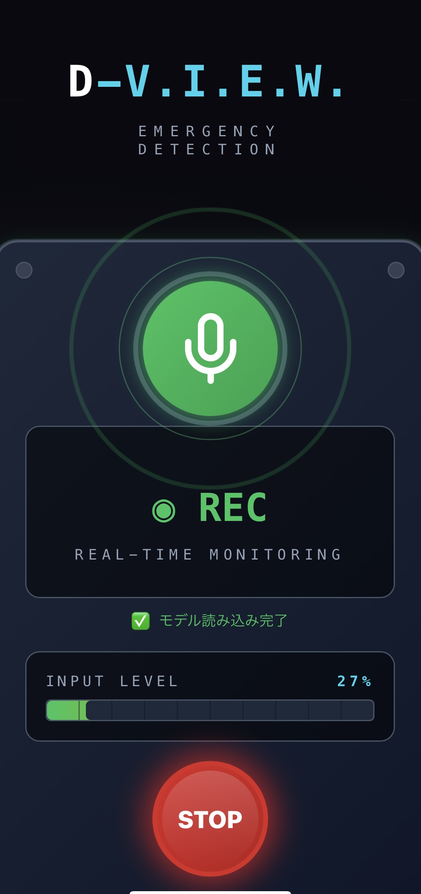
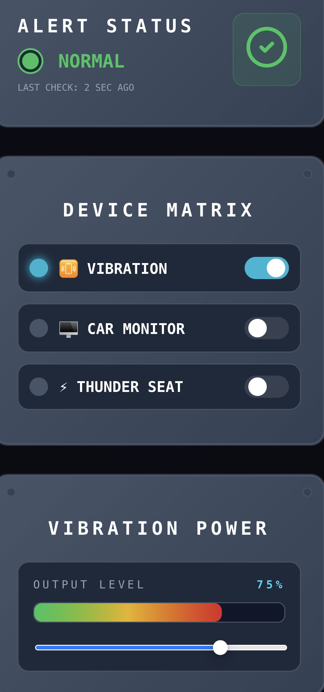
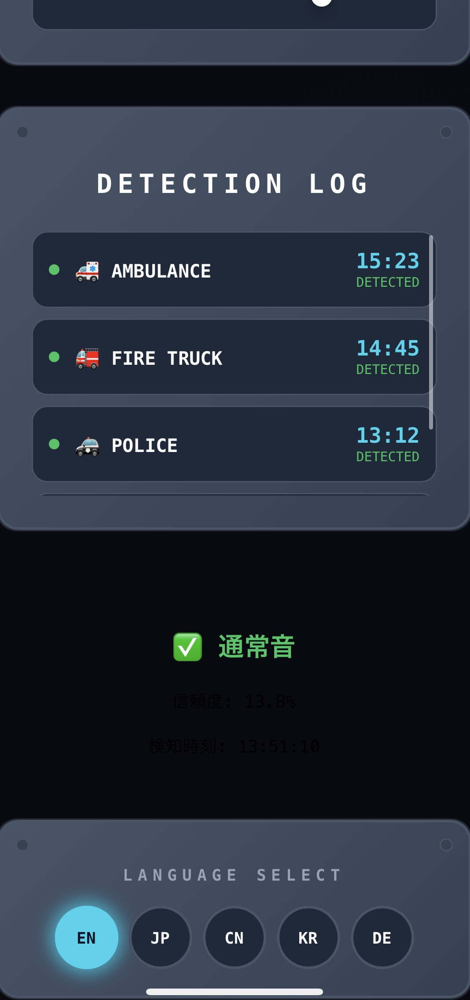

001
OTO-BOT
カセットテープが、ロボットになる。
幼い頃から使っていたウォークマンへの愛着から生まれたキャラクター。カセットテープを挿入すると起動し、自分で歩き出す。普段はアンプ型の充電ドックで休憩。ヘッドホンを持てば持ち運べる。
Other Blender Works

Axolotl in a Jar

Axolotl Character
Axolotl Animation

Cassette Tape

Portfolio 2026
Designer & Developer based in Tokyo
001
カセットテープが、ロボットになる。
幼い頃から使っていたウォークマンへの愛着から生まれたキャラクター。カセットテープを挿入すると起動し、自分で歩き出す。普段はアンプ型の充電ドックで休憩。ヘッドホンを持てば持ち運べる。
Other Blender Works

Axolotl in a Jar
Axolotl Character
Axolotl Animation

Cassette Tape
002
AIになった孫が、おばあちゃんのわからないを全部助ける。
ガラケー終了後のデジタル化社会で、高齢者と電子デバイスの共存は必然的課題。祖母がスマホ操作に困るたびに孫を呼ぶ光景から着想し、不在時でも「孫」がLINEでいつでも助けられる環境を構築。
背景 — 社会課題ガラケー終了後のデジタル化社会で、高齢者と電子デバイスの共存は必然的課題である。
背景 — 原体験祖母がスマホ操作や日常生活に困るたびに孫である自分を呼ぶ光景から着想。不在時でも「孫」がLINEでいつでも助けられる環境を作りたい。
技術構成ベースLLM: Groq / Claude API（回線不良時はOllamaでローカル完結）。複数API統合: Gemini（画像解析）/ Spotify / RSS・GNews / 天気・バス時刻表・番組表等。パーソナライズ2層構造。
現在の実装状況ベースRia稼働中 / LINE Bot実装 / 専用UI完成 / 毎晩0時の自動学習ループ稼働中 / パーソナライズの構築（Phase 4.6 / 9）
003
AIの耳で、全てのドライバーに安心を。
聴覚に不安を持つドライバー向けの緊急車両サイレンリアルタイム検知システム。音声をフーリエ変換でメルスペクトログラムに変換しCNNで分類。TensorFlow.jsによりブラウザ上で完結、ネット接続不要。
背景 — 社会課題日本では補聴器の使用を条件に聴覚障害者の運転が認められているが、車内ではサイレン音の聞き取りが困難な場面が発生する。
技術仕様Web Audio APIでリアルタイム録音。フーリエ変換によりメルスペクトログラムに変換。CNNで画像分類。TensorFlow.jsによりブラウザ完結。多言語対応（EN/JP/CN/KR/DE）
現在の状況ブラウザ上でのリアルタイム音声録音・モデル推論まで実装完了。判定精度向上のためモデル再構築中。

デバイスマトリクス

検知ログ / 多言語対応

リアルタイム検知モード

実装コード（React + TensorFlow.js）